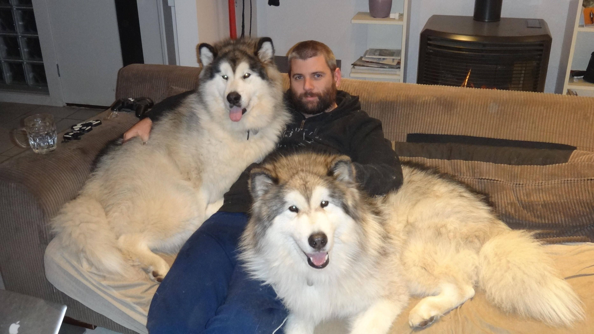

Pet Channel
| ไจแอนท์ อลาสกัน มาลามิวท์ (Giant Alaskan Malamute) |
|  |
ลักษณะทั่วไป อันที่จริงแล้วน้องหมาอลาสกัน มาลามิวท์ จะมีน้ำหนักตามมาตรฐานสายพันธุ์อยู่ที่ 75 – 85 ปอนด์ ไม่เกิน 100 ปอนด์ แต่สำหรับน้องหมาไจแอนท์ อลาสกัน พวกเขามีน้ำหนักตัวมากได้ถึง 190 ปอนด์ หรือ ประมาณ 58 กิโลกรัมเลยทีเดียว อีกทั้งยังสูงถึง 35 นิ้ว หรือ ประมาณ 87 เซนติเมตร ดูไปดูมาแล้วเหมือนน้องหมีเสียมากกว่า แต่ด้วยนิสัยที่เป็นมิตร สงบ สุภาพอ่อนโยน ใจดี เหมาะสำหรับเลี้ยงเป็นเพื่อนของสมาชิกในครอบครัว เพราะพวกเขามีความอดทนต่อการเล่นแรง ๆ ของเด็ก ๆ ฝึกง่าย ไม่ก้าวร้าวด้วยค่ะ มีดีขนาดนี้จะไม่ให้ฮอตฮิตติดอันดับน้องหมาพันธุ์ใหญ่ยักษ์ที่มีคนเลี้ยงมากที่สุดในเมืองไทยได้อย่างไรล่ะ |